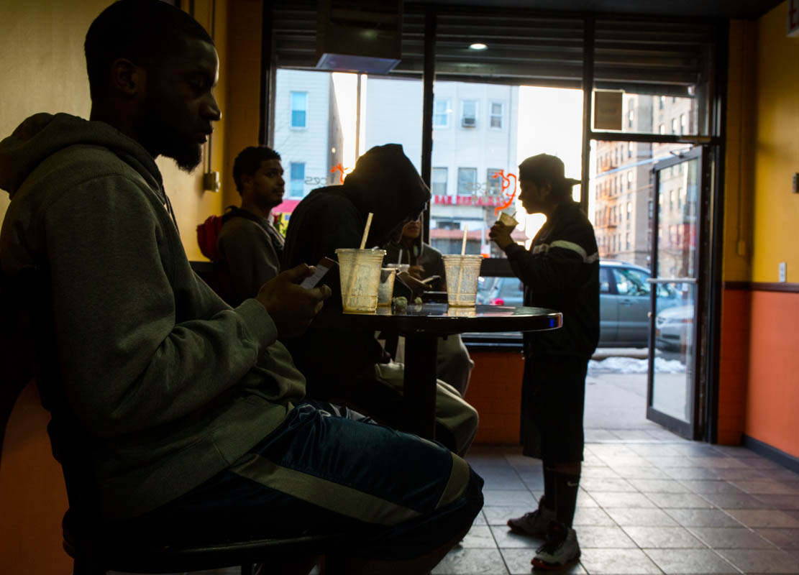
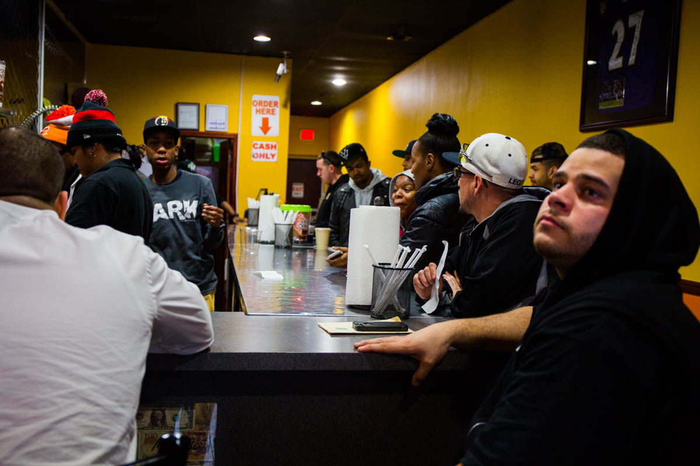
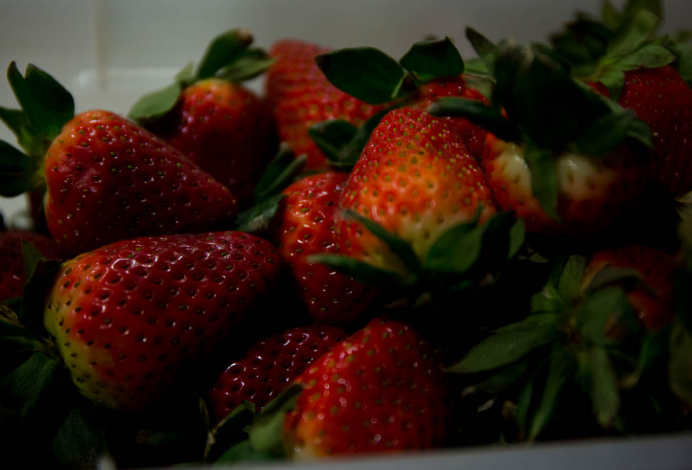
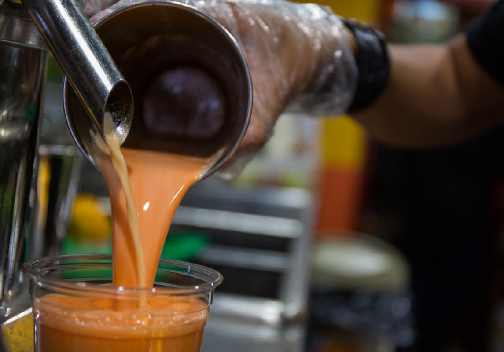
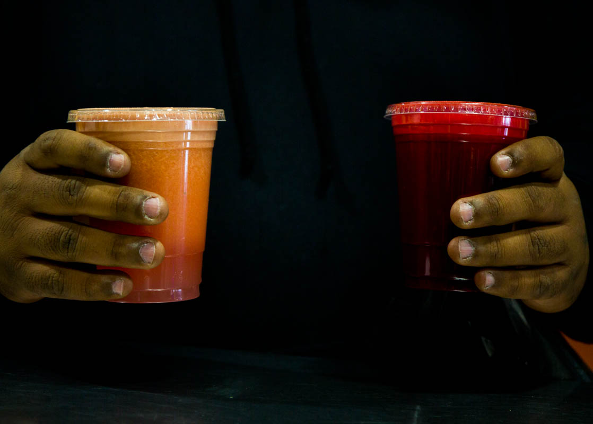
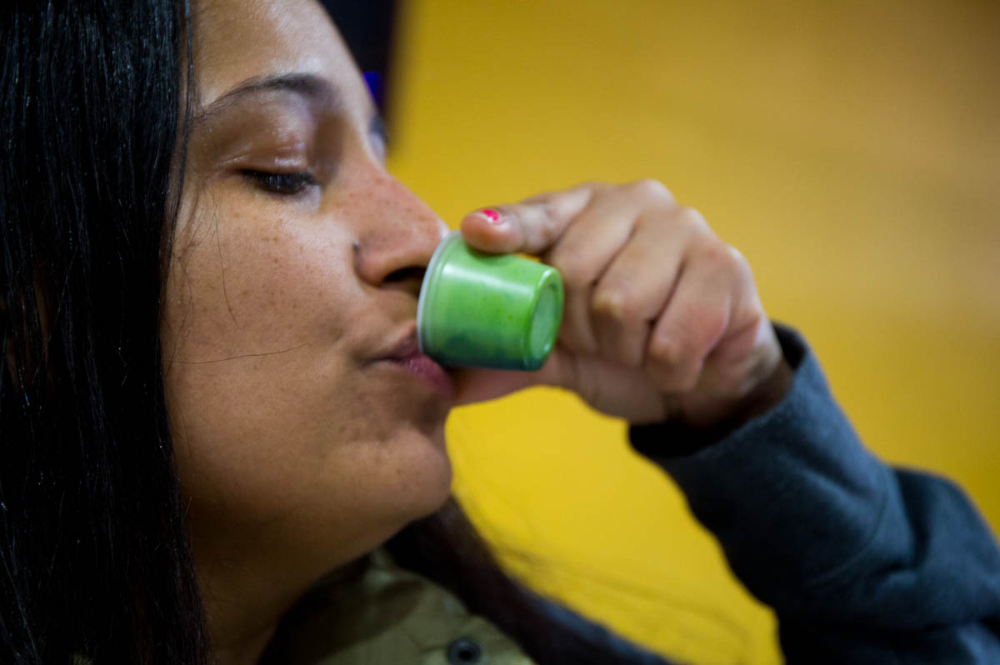
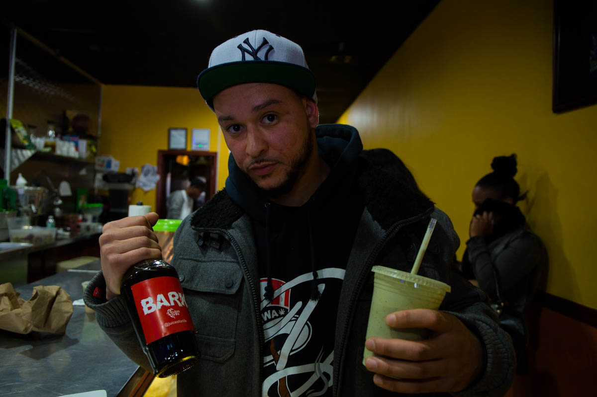

By 4pm, Javone Rodriguez had downed two $5 “ Armageddons ”, one “Around the world” and a $3 wheat grass shot. Javone and his fellow patrons are proof that juicing, a lifestyle found more often among rich vegan women, is for everyone.

A Juice bar on Castle Hill Avenue
by Rahima Gambo
Opening a juice bar on Castle Hill Avenue was a radical idea when it was first initiated by famous Bronx rapper Styles P, Trinidadian-born juicing expert Nigel Rollocks and Leo Galvez a local entrepreneur, in 2011 when the food culture of the neighborhood was dominated by chicken gyros and grilled cheese sandwiches.

We keep our customers happy with fresh fruits and vegetables
Only Fresh organic fruits , are used to make juices and smoothies that are sold at really affordable prices. A special like the popular "Yonkers" a mixture of lemon, pineapple and orange is $6 dollars.

Strawberries, Mangoes, Pineapple
The South Bronx has been branded by the US Department of Agriculture, as a “Food Desert”, defined as a low income area lacking access to affordable and nutritious food. Yet this juice bar is rebelling against the label.

People care about health more
On a Sunday afternoon the bar is packed. The noise from the blenders mix with music from the radio and customers ordering specials like the “Weight Loss” a mixture of grapefruit, lemon and grapes and the “Yonkers” a sour mix of mango, strawberries and pears.
I love juices. before this bar opened I had to go to Harlem to get my juices.
The noise from the blenders mix with music from the radio and customers ordering specials like the “Weight Loss” a mixture of grapefruit, lemon and grapes and the “Yonkers” a sour mix of mango, strawberries and pears.

It's about healthy choices being available on the block
The Reggaeton blasting juice bar with a menu that reads like XXL magazine is perhaps symbolic of this changing Bronx neighborhood.

Wheatgrass shots are very popular here
In the 1990s Castle Hill was known as a high crime, low-income neighborhood with a declining economy and real estate values. Now the neighborhood is touted as a quiet residential area where house values have gone up 3.8% over the last year according to the real estate information site Zillow.

Its a Lifestyle. Some people take wheatgrass others take coffee
Dressed in baggy jeans and a Yankees cap, Andre, 27, ordered a bottle of bark, which he described as the natural element of Viagra.